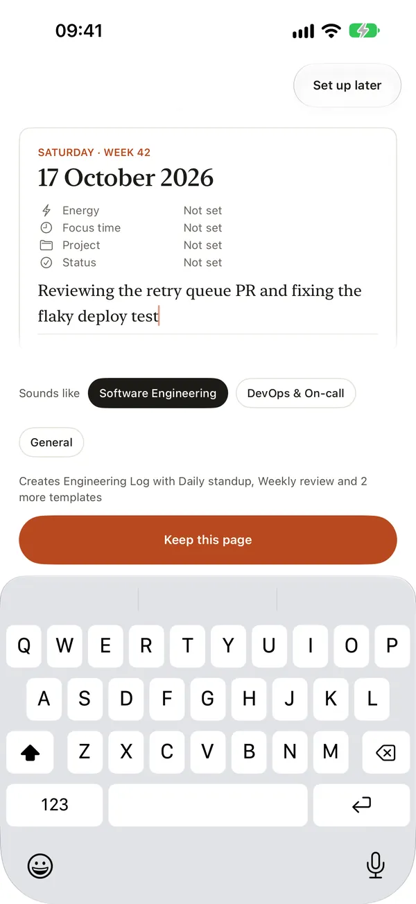
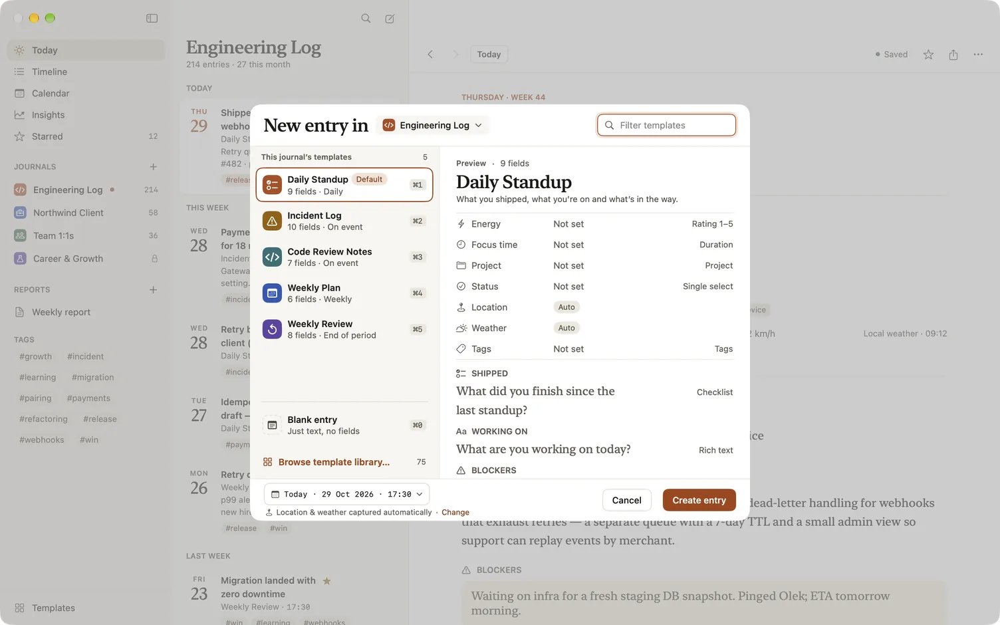
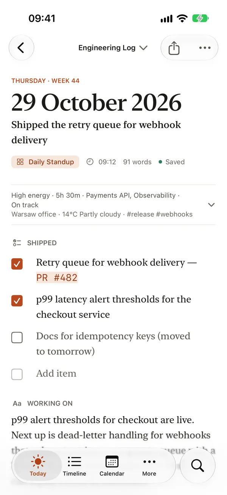

Getting started with Dayfolio
Dayfolio is a work journal. You keep a journal for each role, client or area of work, and every entry starts from a template shaped like that work: a standup, a client meeting, a 1:1, a shift debrief. This page takes you from a fresh install to your first entry, and shows where everything else lives.
Your first page
The first time you open Dayfolio, it doesn’t ask you to configure anything. It shows today’s page with one question: “What are you working on today?”
- Write a line about your day, the way you’d say it to a colleague: “Reviewing the payments retry design and two code reviews.”
- After a few words, Sounds like offers up to three kinds of work that match what you wrote, always ending with General. Pick the one closest to your job. Dayfolio works this out on your device; your words go nowhere.
- Under the page, a line names what will be made, such as “Creates Engineering Log with Daily standup, Weekly review and 2 more templates”, and the template’s fields show faintly so you can see its shape.
- Choose Keep this page (⌘⏎ on a Mac or an iPad with a keyboard). Dayfolio creates the journal and your first entry, dated now, holding the line you wrote.
Nothing is created before you choose Keep this page. If you pick General, your words become a Note and the general templates are added for later.

After Keep, a card under the entry asks “Write again tomorrow?” with the time the template suggests, for example weekdays at 09:00 for a standup or 17:30 for a billable day. Remind me adds that reminder to the journal; Not now adds nothing. If the journal is for notes about people, such as one made for management, Dayfolio also asks once whether to lock it. See Locked journals and privacy.
Other ways to start
- Set up step by step goes through the kinds of work as a list, then shows the starting setup: each journal with its templates, a daily reminder and, when you’re signed in to iCloud, Sync with iCloud. Choose Start journaling when it looks right.
- Already have journals? Import… restores a Dayfolio archive or a Markdown folder. See Import, export and backups.
- If you already use Dayfolio on another device with iCloud, a new device looks for your journals in iCloud first and opens them, with no setup at all. See Sync and iCloud.
Journals, templates and entries
- A journal holds the entries for one role, client or area of work, such as Engineering Log or Northwind Client. Each has its own name, colour, icon and templates.
- A template is the shape of an entry: an ordered set of fields such as Energy, Focus time, Status, Blockers and Notes. Dayfolio’s library has 75 templates in 16 packs, one pack for each kind of work, and you can change any of them. See Templates and fields and the template gallery.
- An entry is one page in a journal, made from a template at a date and time. A journal can have any number of entries on the same day.
Write today’s entry
Today opens your current journal at today’s most recent entry. When there’s nothing yet, it says “Nothing written today” and offers to start the journal’s default template in one tap, for example Start today’s standup.
To start any other entry:
- On a Mac: press ⌘N, or choose File › New entry. When the journal has more than one template, the New entry sheet opens: pick a template (⌘1 to ⌘5 for the first five, ⌘0 for Blank entry), change the date and time if you need to, and choose Create entry. ⌥⌘N always opens the sheet.
- On iPhone: tap the round New entry button above the tab bar. Touch and hold it for a menu of the journal’s templates, Note and Choose template and date….
- On iPad: use New entry in the list column’s bar; touch and hold it for the same menu.

Fill in the fields and write. Dayfolio saves as you type, and “Saved” shows in the toolbar; there’s no Save button. Past entries stay editable.

Add another journal
- On a Mac: choose + beside Journals in the sidebar, or File › New journal….
- On iPhone and iPad: open the journal menu at the top of Today and choose New journal….
Give it a name, an icon and a colour, and choose a Template pack to start from. The pack’s templates are listed with ticks; untick the ones you don’t want. Create journal makes it, opening with the template people in that job write most.
Location and weather
Dayfolio can record where you wrote an entry and the weather there at the time. A new journal starts with this off. To turn it on, open the journal’s settings and switch on Capture location & weather with new entries under Privacy. Weather is fetched once, when the entry is made, and never changed afterwards.
What’s free
Dayfolio is free to start, with no account and no subscription. The free version has one journal and 100 entries, and you can make and read reports in the app. A one-time purchase for your platform adds more journals and entries, attachments, templates of your own, and keeping and sending reports. Anything you’ve written stays yours to read, edit and export, whatever you decide. Prices are on the Dayfolio page.
Tips
- On a Mac or an iPad with a keyboard, press ⌘J for Go to… and type a day (“fri”, “3 oct”), a journal or a template.
- On a Mac or an iPad with a keyboard, press Tab after an entry’s title to fill its fields in one line, such as “energy 4, focus 2h, status on track”. See Templates and fields.
- Star the entries you’re proud of as you go. Reports put them first. See Reports.